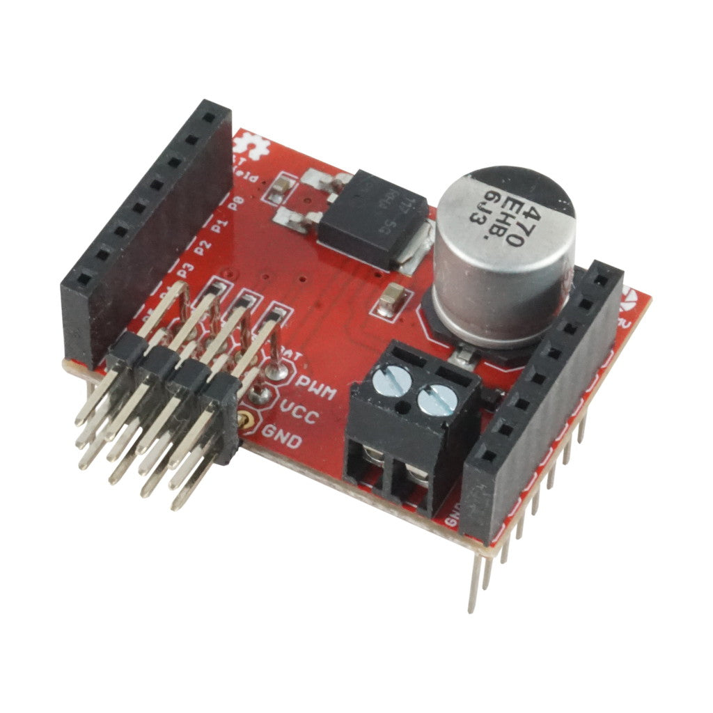
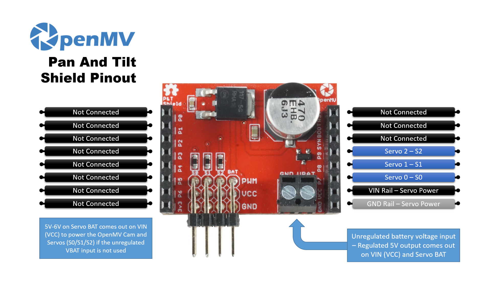

Pan and Tilt Shield¶
ה-Pan and Tilt Shield מעניק ל-OpenMV Cam שלושה ערוצי סרוו עם מסדיר מתח ליניארי של 5 V מסוג NCP1117 המפעיל הן את המצלמה והן את הסרוו מכניסת סוללה יחידה של 6.5–18 V.
{kind=link}

לקבלת גיליון נתונים מלא, תמונות ופרטי הזמנה ראו את דף המוצר של Pan and Tilt Shield.
עיקרים¶
שלושה ערוצי סרוו עצמאיים
ניתן לערום עם Servo Shield
מערך פינים¶
{kind=link}

סימוכין פינים¶
פין |
תפקיד |
|---|---|
P7 |
Servo 0 (S0) |
P8 |
Servo 1 (S1) |
P9 |
Servo 2 (S2) |
VBAT in |
כניסת סוללה של 6.5–18 V על מסוף הברגים (מגבלות NCP1117) |
VIN out |
5 V מוסדר מה-NCP1117 שעל הלוח — מפעיל הן את המצלמה והן את פס הסרוו |
פס GND |
הארקה משותפת לסרוו ולמצלמה |
שימוש¶
הפעילו את שלושת ערוצי הסרוו עם PWM בתדר 50 Hz. טווח רוחב הפולס משתנה בין סרוו לסרוו, לכן כווננו את MIN_US ו-MAX_US כך שיתאימו לשלכם — ערכים אופייניים הם בסביבות 1000–2000 µs:
from machine import Pin, PWM
import time
MIN_US = 1000 # full-left pulse width (microseconds)
MAX_US = 2000 # full-right pulse width
pan = PWM(Pin("P7"), freq=50) # S0
tilt = PWM(Pin("P8"), freq=50) # S1
aux = PWM(Pin("P9"), freq=50) # S2
def angle(servo, deg):
pulse_us = MIN_US + (deg * (MAX_US - MIN_US)) // 180
servo.duty_ns(pulse_us * 1000)
while True:
angle(pan, 0)
angle(tilt, 90)
time.sleep(1)
angle(pan, 180)
angle(tilt, 45)
time.sleep(1)